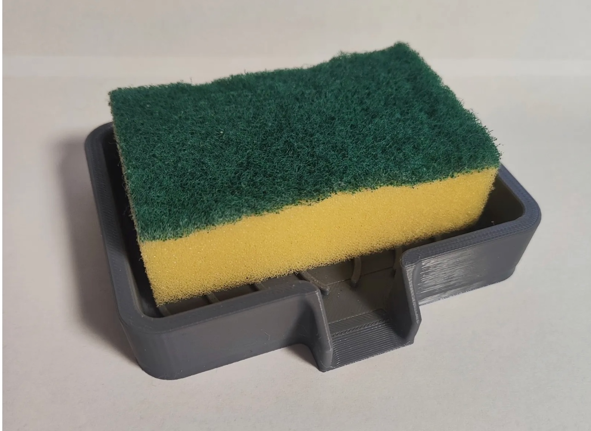
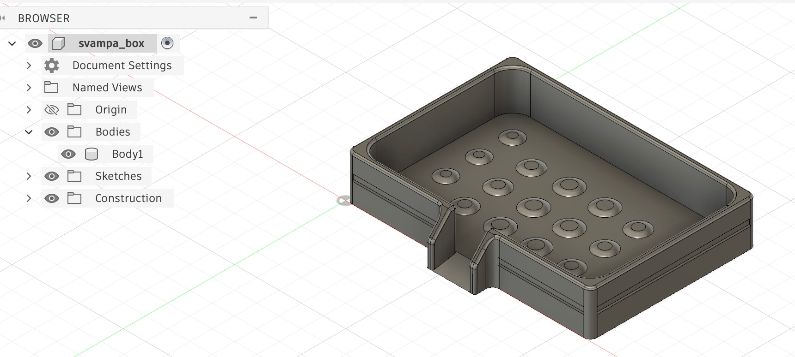
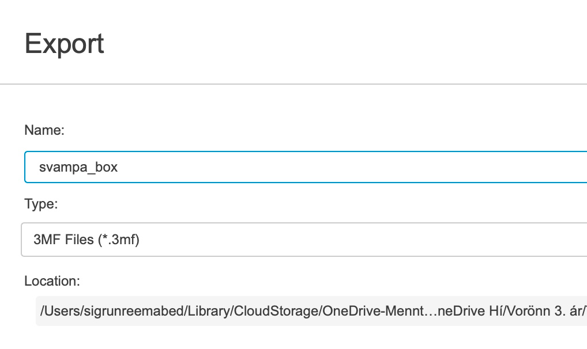
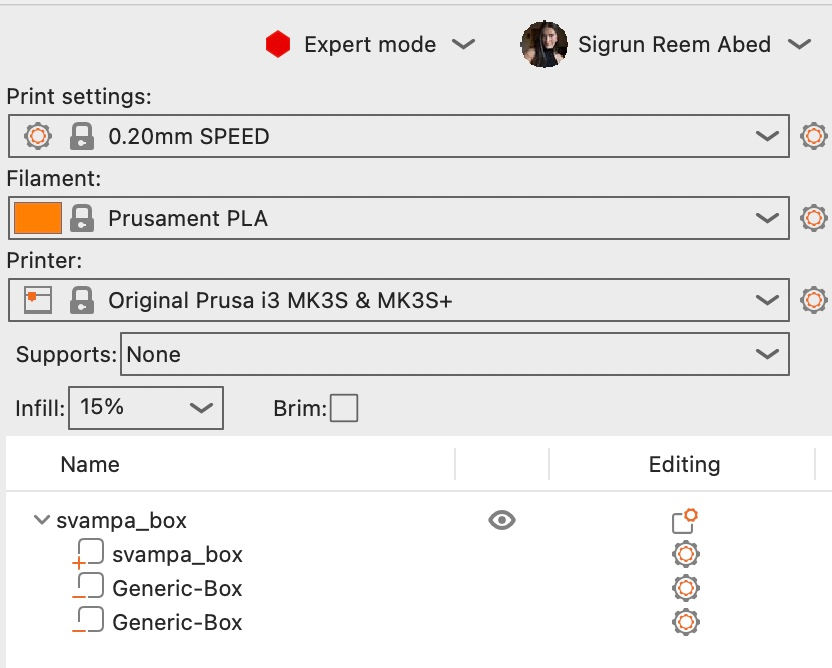
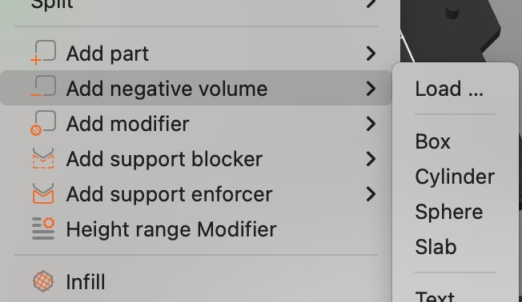
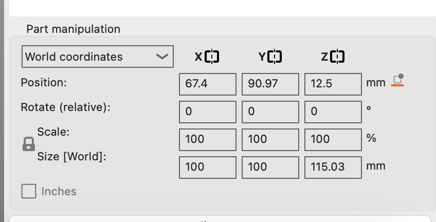
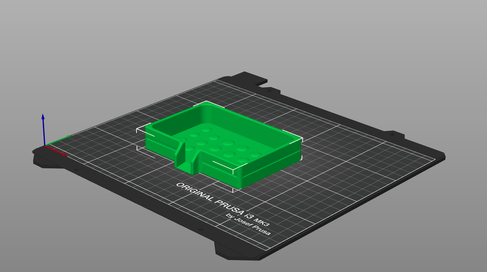

Verkefni 3
3D prentun og 3D skönnun
Inngangur
Markmið þessa verkefnis er að hanna og framleiða lítinn hlut með 3D prentun sem erfitt eða ómögulegt væri að framleiða með hefðbundnum frádráttaraðferðum. Fyrst verða gerðar prófanir á prentaranum til að sjá hvaða skorður og hönnunarreglur þarf að hafa í huga. Síðan verður hluturinn prentaður og farið yfir hvað lærðist af ferlinu. Einnig verður einn hlutur 3D skannaður sem hluti af verkefninu.
3D prentun
Undirbúningur
Ég byrjaði á því að kynna mér verkefnalýsinguna og verkefnið með því að horfa á myndbönd frá kennara um verkefnalýsingu fyrir Verkefni 3. Eftir það fór ég á síðuna Printables og skoðaði hvað væri hægt að 3D prenta.
Skoða hugmyndÉg hugsaði strax um að mig langaði að 3D prenta eitthvað sem ég gæti notað á heimilinu og eitthvað sem gæti gagnast mér í daglegu lífi. Þá fór ég að skoða allskonar hugmyndir fyrir eldhúsið og fann loksins eitthvað sem ég kalla svampabox. Hugmyndina má sjá hér til hægri.
Ferlið
Forsendur
Eins og nefnt var í inngangi átti að hanna eitthvað sem ekki var hægt með hefðbundinni frádráttaraðferð. Til að kynna mér hvað það væri nánar, las ég mig til um á síðunni Formlabs. Þá gat ég áttað mig á því að hönnunin sem mig langaði að búa til myndi passa fyrir þessar forsendur. Samkvæmt Formlabs hentar 3D prentun sérstaklega vel fyrir litla og flókna hluti, en hefðbundin frádráttaraðferð hentar frekar betur fyrir stærri og einfaldari hluti. Hönnunin mín er með innra hólf, op að framan, rúnnuð horn og mörg smáatriði í botninum, sem myndi gera framleiðslu með hefðbundinni subtractive aðferð flókna og óhagkvæma ef hluturinn ætti að vera framleiddur í einu lagi. Þess vegna tel ég að þessi hönnun henti betur fyrir 3D prentun en hefðbundna frádráttaframleiðslu.
Hönnun

Ég byrjaði á því að hanna hlutinn í Autodesk Fusion . Byrjað var á því að teikna botninn og síðan veggina í skring, allt í sketch. Að lokum voru bætt við allskonar fínpússi, eins og upphleyptum hringjum í botninn og lítilli rönd sem fer í kring um allt boxið. Röndin sem teiknuð var er skorin inn í boxið og síðan var bætt við chamfer eiginleikanum í Fusion. Einnig var hannað litla "rennibraut" þar sem vatnið úr svampinum gæti lekið út. Hér til hliðar má sjá hönnunina tilbúna í Fusion. Einnig má skoða 3D líkan af svampaboxinu hér fyrir neðan:
Prófun

Eftir að ég hafði hannað svampaboxið kom að því að ég þurfti að framkvæma prófun til þess að ákvarða hönnunar reglur og skorður áður en módelið er á endanum prentað. Eins og sést hér til vinstri, exportaði ég skránna sem 3mf til þess að færa hana inn í Prusa slicer.Þegar ég var búin að opna 3mf skránna í Prusa slicer, gat ég breytt beginner mode yfir í expert mode fyrir fleiri eiginleika. Ég gat einnig búið til negative volume með boxi til þess að hanna litla test hlutann minn. Ég ákvað að prófa að prenta eitt hornið, eð öllum stærðum af hringjum, í fullri stærð. Þá gat ég séð hvort að hringirnir í botnunum prentuðust út rétt, ásamt fillet í hornunum og röndinni á hliðunum. Myndir af stillingum í Prusa slicer má sjá hér að neðan:



Eftir að ég var búin að búa til tvö box til þess að skera út bara hornið leit þetta svona út í Prusa slicer:



Skoða hugmyndPrentun
Mér fannst testið koma mjög vel út. Hringirnir prentuðust vel, ásamt öllum fillet. Röndin kom einnig mjög vel út og gerði mikið fyrir útlit boxins. Þá var ekkert annað í stöðunni en að setja af stað módelið í heilu lagi. Hér til hliðar má sjá hvernig það leit út í Prusa slicer.
Sömu stillingar voru notaðar fyrir allt svampaboxið í Prusa slicer. Þær má sjá hér til vinstri. Næst var ýtt á slice now og Maggi leiðbeinandi hjálpaði með restina að færa yfir í 3D prentarann og ákveða stillingar þar.
Lokaútkoma


3D skönnun
Undirbúningur
Það var nú ekki mikið sem ég þurfti að undirbúa til þess að byrja að 3D skanna en ég byrjaði á því að skoða síður fyrrum nemenda til þess að athuga hvaða forrit þau notuðu til þess að framkvæma þennan hluta. Ég fór yfir margar heimasíður og sá þá að flestir voru að vinna með Polycam. Ég ákvað að nota það einnig og byrjaði að læra á forritið, sem reyndist mjög auðvelt.
Ferlið
Ég ákvað að 3D skanna fyrst blómavasa heima hjá bróður mínum. Það kom ekki svo vel út þar sem hann var á borði en ég gat ekki labbað í kringum allt borðið. Fyrsta og önnur tilraun má sjá hér að neðan:
Fyrsta tilraun
Seinni tilraun